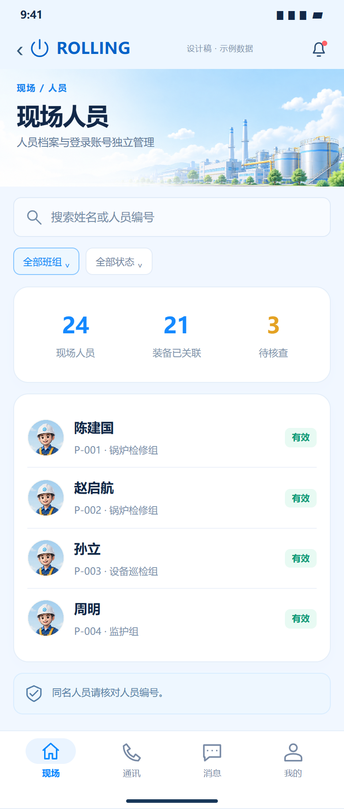
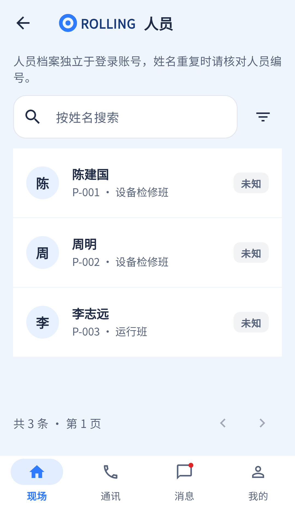

基本人员查询已有，编号搜索、班组筛选和汇总仍未在安卓端接出。
相同 · 已有基础
人员档案独立账号、姓名搜索、编号/班组/状态、详情和分页已有。
不同 · UI与场景
当前标题“人员”、姓氏头像、简行列表；缺插画、班组下拉和三项统计，状态筛选藏在图标菜单。
01 / 先看 UI
两图显示宽度统一；设计390px与当前360逻辑宽的画布不同。各图可独立滚动到底，点击“原图”放大。


使用既有组件截图；业务数据为示例。
02 / 逐项核对功能与小交互
入口：现场 → 人员 · 当前形态：子页面
| 编号 | 部位 | 设计要求 | 当前UI | 功能结论 | 下一步 |
|---|---|---|---|---|---|
| 07-01 | 顶部 | 现场人员标题和人物/工厂头图 | 当前普通“人员”AppBar | 已有展示，UI差异 | 统一名称和头部 |
| 07-02 | 姓名搜索 | 姓名或编号 | 当前仅按姓名搜索 | 部分：name请求已接，编号未传 | 补personCode；后端已声明personCode参数，验证模糊搜索语义 |
| 07-03 | 清空搜索 | 搜索可恢复全部 | 有清空图标，随重建出现 | 已有代码：清空再加载第一页 | 检查输入后清空图标即时更新 |
| 07-04 | 班组筛选 | 全部班组 | 当前没有 | 缺失：前端未传teamId；后端已支持 | 补班组选项与筛选状态 |
| 07-05 | 人员状态 | 全部/有效等 | 当前图标菜单在职/停用 | 已有代码：status过滤 | 统一词典，状态与有效期到期不可混同 |
| 07-06 | 统计 | 现场人员/装备已关联/待核查 | 当前只有分页总数 | 缺失：统计卡及全量业务口径 | 确定统计定义及接口，不能统计当前页代替全站 |
| 07-07 | 列表 | 头像、姓名、编号、班组、有效徽标 | 有姓氏头像与字段，数据缺状态时显示未知 | 已有代码：进入/people/:id | 替换视觉资源；未知不是UI漏实现 |
| 07-08 | 同名说明 | 核对人员编号 | 当前说明已在顶部 | 已有展示 | 保留，编号不得隐藏 |
| 07-09 | 分页与空态 | 图未展示分页 | 当前上下页、刷新、无结果、权限失败 | 已有代码 | 保留并对齐39/40通用样式 |
源码依据
queries/people.dart:62,103,159；WearPeopleController.java:27
链接为随报告保存的带行号快照；行号对应分析时源码。以函数和字段共同定位，不能将请求代码视为执行成功证据。